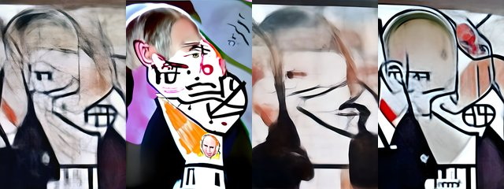

by Mad Monk · Async Art Master #5788 · four-phase · time rule: UTC
Updates four times a day to reflect sunrise / day / sunset / night cycles.

Sunrise 06:00–06:59 · Day 07:00–17:59 · Sunset 18:00–18:59 · Night 19:00–05:59 (UTC)
The full-size files live on IPFS; each is linked on three public gateways, in the order to try them (gateway.pinata.cloud, ipfs.io, dweb.link). Every line says what our own check found: 5 we keep this file pinned, 1 our own copy, pinned here and verified on upload.
QmPUbd2LAGDJn4… gateway.pinata.cloud · ipfs.io · dweb.link — we keep this file pinned, checked 2026-09-23 09:13QmNrE6tQWcEeaw… gateway.pinata.cloud · ipfs.io · dweb.link — we keep this file pinned, checked 2026-09-23 09:13QmSQPVw2tStB1y… gateway.pinata.cloud · ipfs.io · dweb.link — we keep this file pinned, checked 2026-09-23 09:13Qmf9yHyYWKNKNP… gateway.pinata.cloud · ipfs.io · dweb.link — we keep this file pinned, checked 2026-09-23 09:13bafybeiar7ke5r… gateway.pinata.cloud · ipfs.io · dweb.link — our own copy, pinned here and verified on upload, checked 2026-09-22QmU2eRyB3MgVW6… gateway.pinata.cloud · ipfs.io · dweb.link — we keep this file pinned, checked 2026-09-23 09:13QmNrE6tQWcEeaw… gateway.pinata.cloud · ipfs.io · dweb.link — we keep this file pinned, checked 2026-09-23 09:13QmNrE6tQWcEeaw… gateway.pinata.cloud · ipfs.io · dweb.link — we keep this file pinned, checked 2026-09-23 09:13Qmf9yHyYWKNKNP… gateway.pinata.cloud · ipfs.io · dweb.link — we keep this file pinned, checked 2026-09-23 09:13QmPUbd2LAGDJn4… gateway.pinata.cloud · ipfs.io · dweb.link — we keep this file pinned, checked 2026-09-23 09:13QmSQPVw2tStB1y… gateway.pinata.cloud · ipfs.io · dweb.link — we keep this file pinned, checked 2026-09-23 09:13Based on Putin photography, Kids Takeover Putin is text-to-image experimentation on war, peace and leadership. It is re-creating the leadership in the eyes of a kid takeover for peace. Stop the War. We hoped, I hoped this was already the past in Europe. We should not go back. There is a lot of interesting material that range from childish and peaceful to satirical and dark. I will post them and perhaps I will post most of them hoping this ends as soon as possible. This is one of the 2 4-piece somewhat abstract pieces on Async Art. There is also 1 24 piece set and 12 2-piece Nova Apartchiks on Async Art. For multi editions and some other 1/1s, please visit my collection on…
async.art · OpenSea · Etherscan
Generated archive pages. Content identifiers point to the public IPFS network.